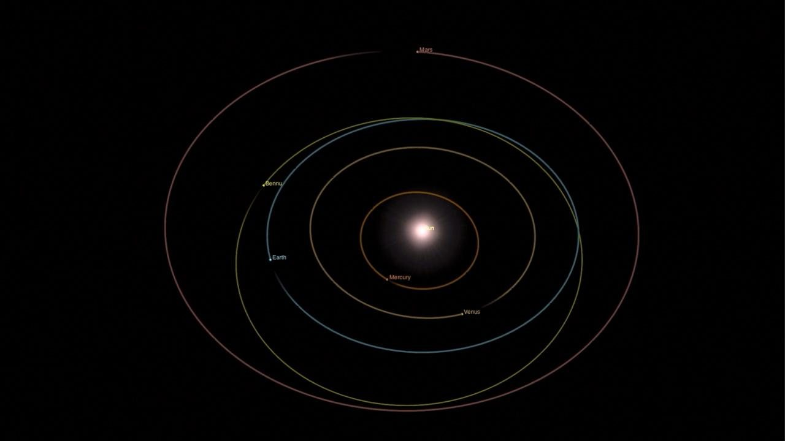
Δήμητρα
Το μεγαλύτερο σώμα της ζώνης αστεροειδών, με διάμετρο 940 χλμ. Περιέχει περισσότερο νερό από όλη τη Γη, κυρίως ως πάγο κάτω από την επιφάνεια. Το Dawn τη μελέτησε από κοντά το 2015–2018.
Το σπίτι μας στο διάστημα
Ένα άστρο, οκτώ πλανήτες, πέντε αναγνωρισμένοι νάνοι πλανήτες, εκατοντάδες δορυφόροι και δισεκατομμύρια μικρά σώματα. Το ηλιακό σύστημα γεννήθηκε πριν 4,6 δισεκατομμύρια χρόνια από ένα νέφος αερίου και σκόνης.
Το ηλιακό σύστημα ξεκίνησε ως ένα περιστρεφόμενο μοριακό νέφος. Όταν ένα τμήμα του κατέρρευσε υπό τη βαρύτητα, το μεγαλύτερο μέρος της μάζας συγκεντρώθηκε στο κέντρο και σχημάτισε τον Ήλιο. Το υπόλοιπο υλικό επίπεδωσε σε έναν δίσκο, όπου κόκκοι σκόνης συγκρούστηκαν και κόλλησαν σε όλο και μεγαλύτερα σώματα — τα πλανητικά έμβρυα.
Κοντά στον Ήλιο επικράτησαν τα βαρύτερα, βραχώδη υλικά: Ερμής, Αφροδίτη, Γη και Άρης. Πιο έξω, όπου έκανε λιγότερο κρύο, οι πάγοι επέτρεψαν τη συσσώρευση τεράστιων ποσοτήτων αερίου: έτσι γεννήθηκαν οι γίγαντες Δίας και Κρόνος και οι παγωμένοι Ουρανός και Ποσειδώνας.
Τα περισσότερα υπολείμματα εκτοξεύτηκαν προς τα έξω ή καταστράφηκαν. Όσα απέμειναν σχηματίζουν τη ζώνη αστεροειδών και τη ζώνη Kuiper. Η ίδια διαδικασία παρατηρείται σήμερα γύρω από νεαρά άστρα — άρα δεν είναι μοναδική για εμάς.
Σώματα αρκετά μεγάλα ώστε να είναι σφαιρικά, αλλά που δεν έχουν «καθαρίσει» την τροχιά τους από άλλα σώματα. Η Διεθνής Αστρονομική Ένωση αναγνωρίζει πέντε: Δήμητρα, Πλούτωνα, Χαουμέια, Μακεμάκε και Έριδα.

Το μεγαλύτερο σώμα της ζώνης αστεροειδών, με διάμετρο 940 χλμ. Περιέχει περισσότερο νερό από όλη τη Γη, κυρίως ως πάγο κάτω από την επιφάνεια. Το Dawn τη μελέτησε από κοντά το 2015–2018.
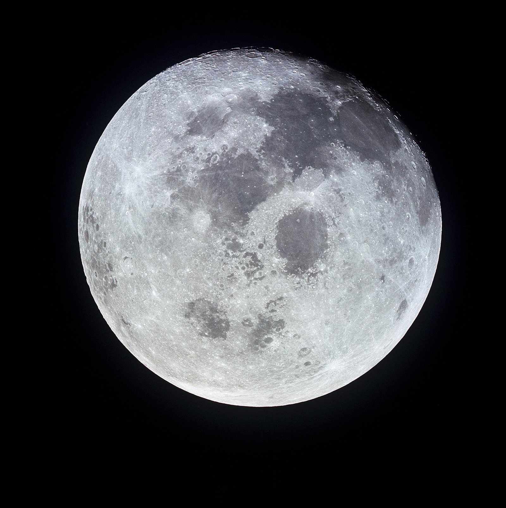
Για 76 χρόνια θεωρούνταν πλανήτης. Το New Horizons το 2015 αποκάλυψε παγωμένα βουνά, αζωτούχα παγετώδη πεδία και μια λεπτή ατμόσφαιρα. Έχει πέντε δορυφόρους, με μεγαλύτερο τον Χάροντα.
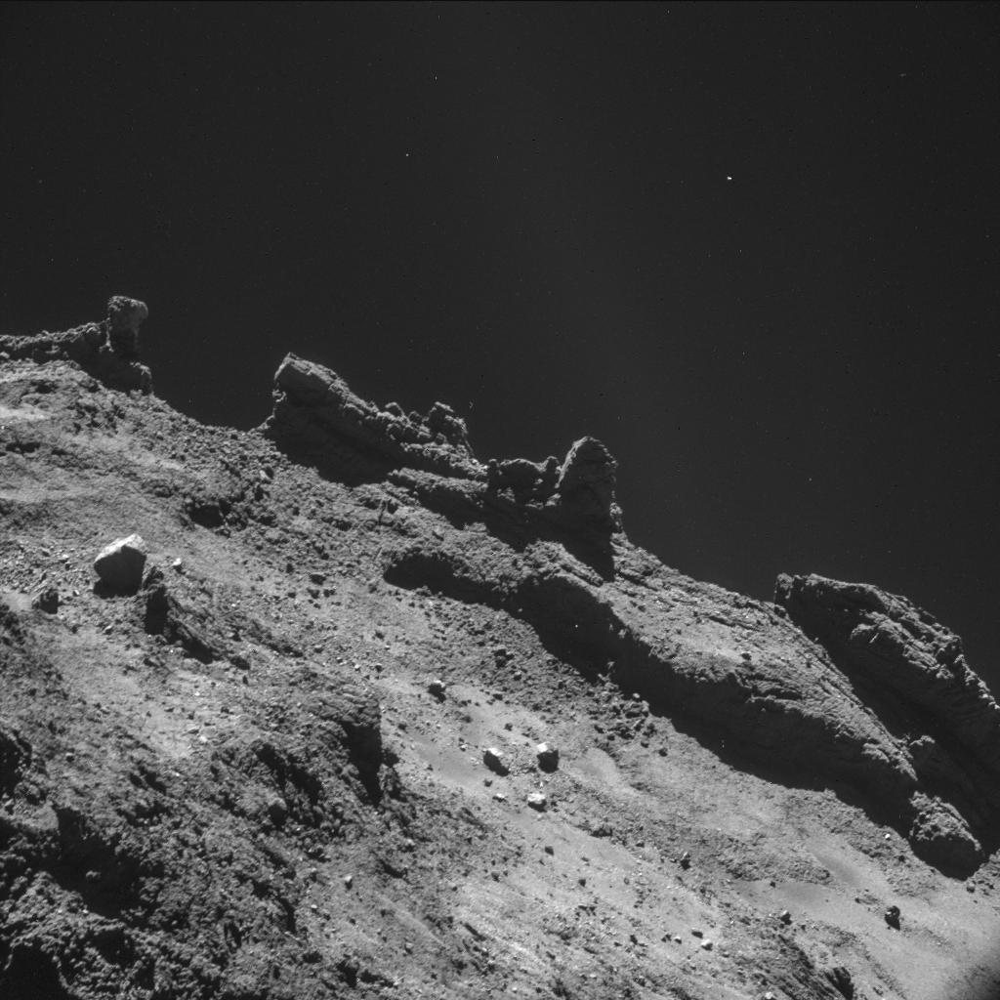
Δύο παγωμένα σώματα παρόμοιου μεγέθους με τον Πλούτωνα. Το Χαουμέια περιστρέφεται τόσο γρήγορα (μία περιστροφή σε 4 ώρες) που έχει σχήμα πεπλατυσμένο. Η Μακεμάκε είναι από τα πιο λαμπρά σώματα της ζώνης.
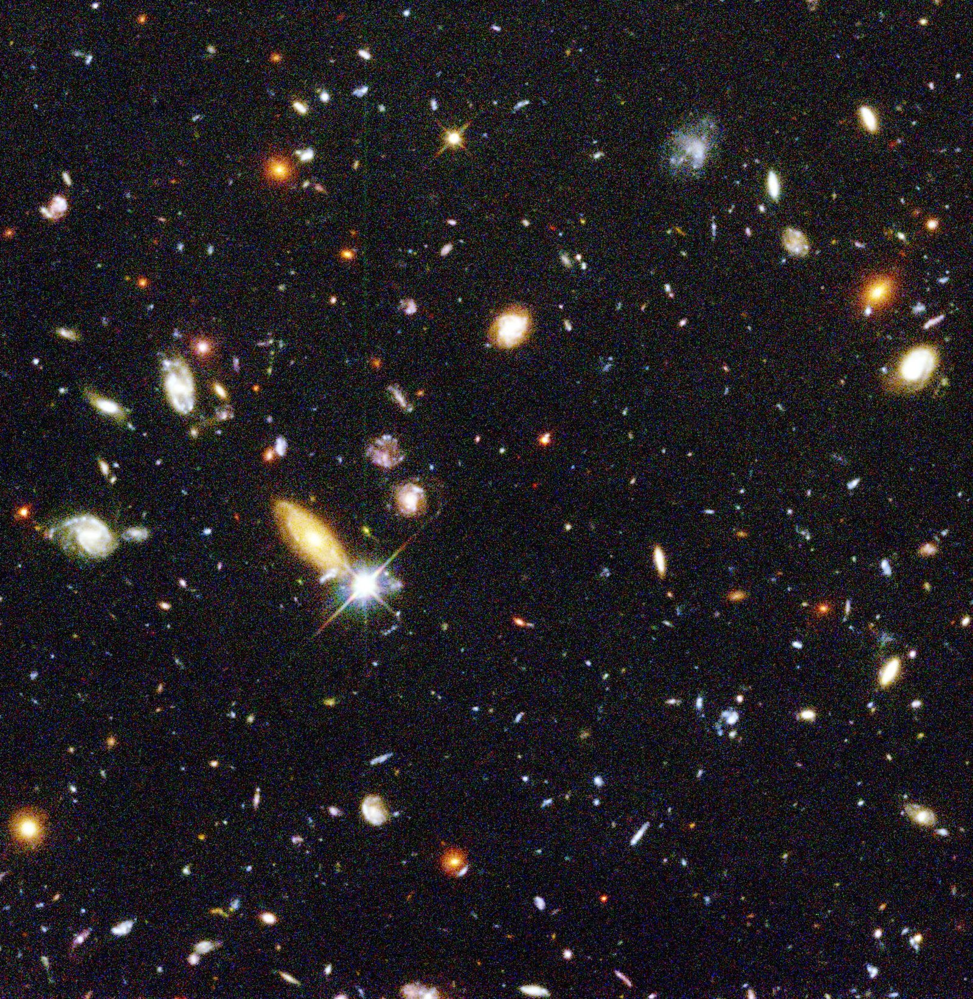
Η ανακάλυψή της το 2005 ήταν η αφορμή για τον επαναπροσδιορισμό του όρου «πλανήτης» και την υποβάθμιση του Πλούτωνα. Είναι μάζας μεγαλύτερης από τον Πλούτωνα και βρίσκεται τρεις φορές πιο μακριά από τον Ήλιο.
Οι δορυφόροι δεν είναι απλοί «φεγγαριά». Ο Γανυμήδης του Δία είναι μεγαλύτερος από τον Ερμή και διαθέτει δικό του μαγνητικό πεδίο. Η Ευρώπη κρύβει έναν ωκεανό υγρού νερού κάτω από έναν φλοιό πάγου, και ο Εγκέλαδος του Κρόνου εκτοξεύει πίδακες νερού από τον νότιο πόλο του. Ο Τιτάνας έχει πυκνή ατμόσφαιρα αζώτου και λίμνες μεθανίου.
Η Σελήνη της Γης είναι ασυνήθιστα μεγάλη σε σχέση με τον πλανήτη της — πιθανώς προϊόν μιας γιγαντιαίας σύγκρουσης με ένα σώμα στο μέγεθος του Άρη, πριν από περίπου 4,5 δισεκατομμύρια χρόνια.
Τα υπολείμματα του σχηματισμού του ηλιακού συστήματος. Κάθε κατηγορία έχει διαφορετική σύσταση, τροχιά και σημασία για την κατανόηση της ιστορίας μας.
Πάνω από ένα εκατομμύριο γνωστά σώματα, κυρίως μεταξύ Άρη και Δία. Ο μεγαλύτερος, η Δήμητρα, είναι νάνος πλανήτης. Οι αστεροειδείς είναι «απολιθώματα» της πρώιμης ηλιακής νεφέλης.
Παγωμένοι πυρήνες με τροχιές από τα έξω όρια του συστήματος. Όταν πλησιάζουν τον Ήλιο, ο πάγος εξαχνώνεται και δημιουργεί την κόμη και την ουρά. Ο 67P/Τσουριούμοφ μελετήθηκε από τη Rosetta το 2014.
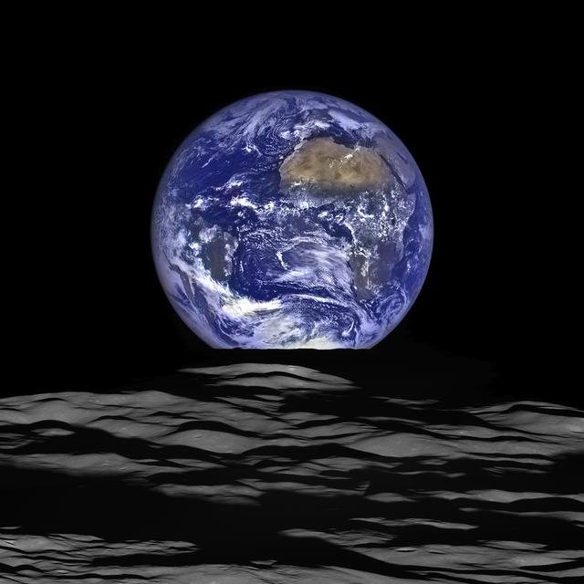
Ό,τι φτάνει στην επιφάνεια της Γης από το διάστημα. Κάποιοι προέρχονται από τον Άρη ή τη Σελήνη. Η ανάλυσή τους δίνει στοιχεία για τη χημεία του πρώιμου ηλιακού συστήματος.
Τι είναι επιβεβαιωμένο: Οι αποστάσεις, οι μάζες και οι τροχιές των πλανητών μετρώνται με ακρίβεια μέσω ραντάρ, τηλεσκοπίων και διαστημοπλοίων. Η ηλικία του ηλιακού συστήματος (4,567 δισ. έτη) προκύπτει από ραδιοχρονολόγηση μετεωριτών. Η ύπαρξη υπόγειων ωκεανών σε Ευρώπη και Εγκέλαδο στηρίζεται σε βαρυτικά δεδομένα και παρατηρήσεις πιδάκων.
Τι παραμένει ανοιχτό: Πόσοι δορυφόροι υπάρχουν συνολικά (νέοι ανακαλύπτονται κάθε χρόνο), αν ο Πλανήτης 9 υπάρχει πέρα από τον Ποσειδώνα, και αν κάποιος από αυτούς τους κόσμους φιλοξενεί μικροβιακή ζωή.
Οι οκτώ
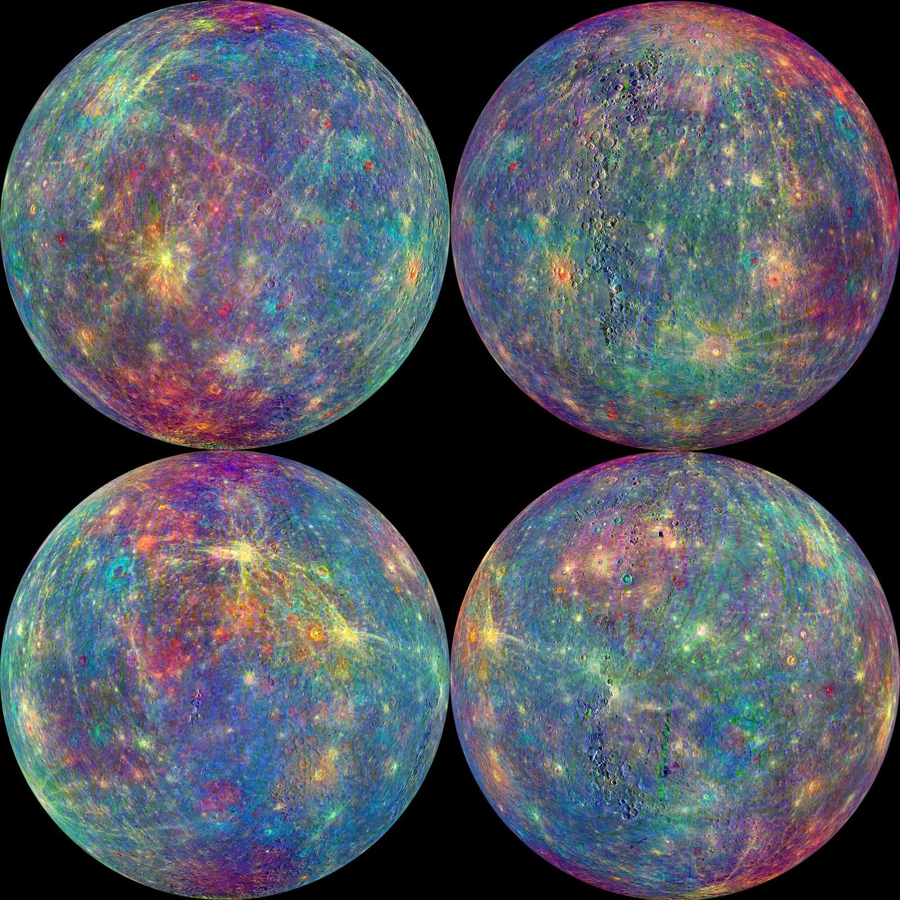
Ο μικρότερος πλανήτης, ο ταχύτερος, με θερμοκρασιακές διαφορές που φτάνουν τους 600 βαθμούς.

Παρόμοια σε μέγεθος με τη Γη, αλλά με επιφάνεια 464 °C και ατμόσφαιρα 92 φορές πυκνότερη.
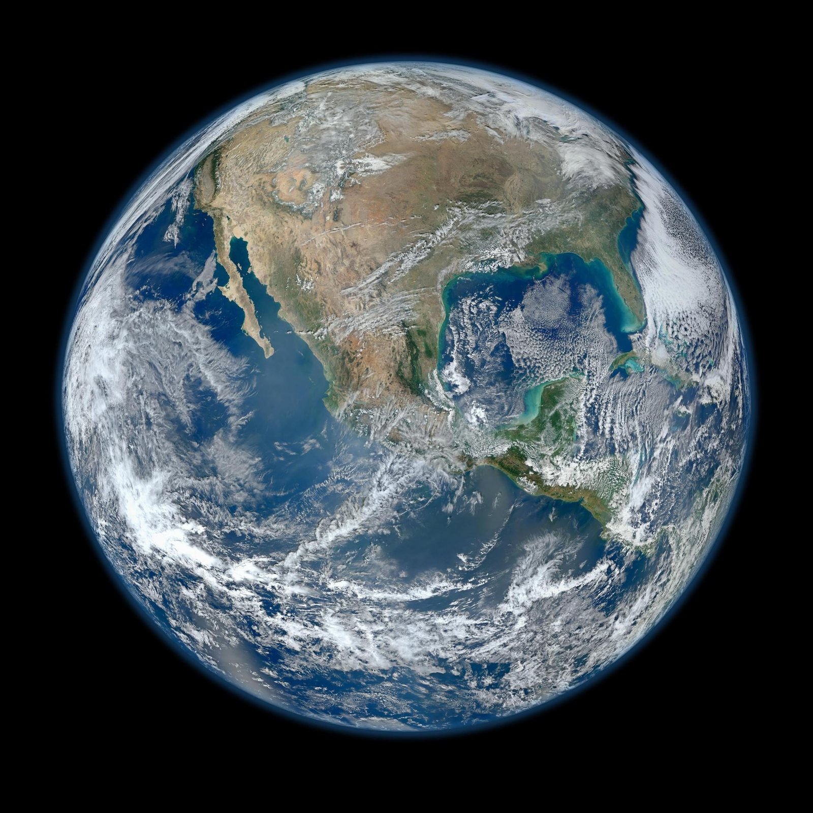
Νερό σε τρεις καταστάσεις, πλάκες που κινούνται, μαγνητικό πεδίο και ζωή — ένας σπάνιος συνδυασμός.
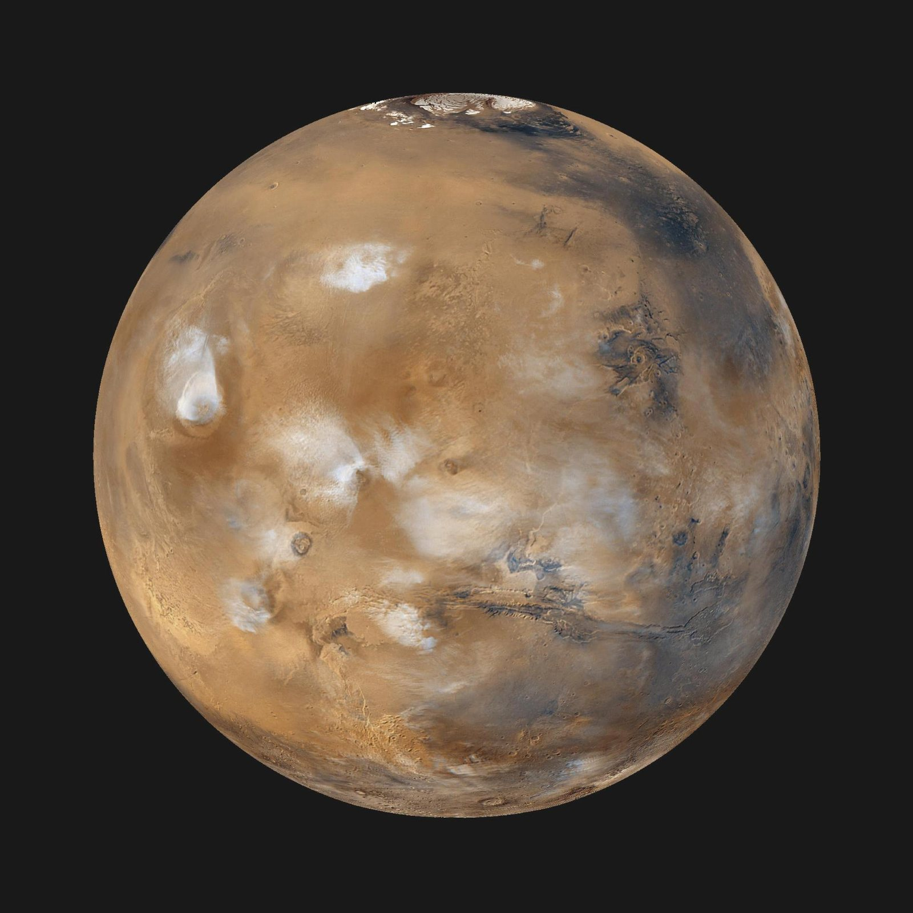
Ο πλανήτης που συγκεντρώνει τα περισσότερα ρομπότ και τα μεγαλύτερα όνειρα της ανθρωπότητας.
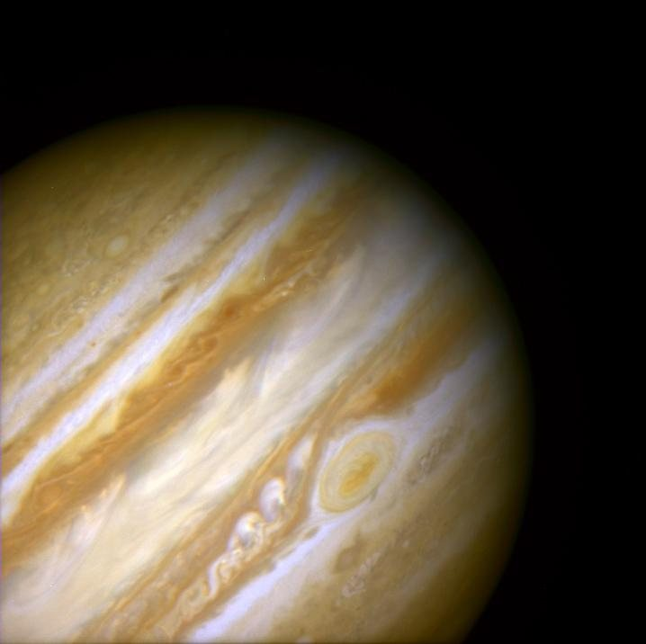
Περισσότερη μάζα από όλους τους άλλους πλανήτες μαζί — και ένας πλανήτης χωρίς σταθερή επιφάνεια.
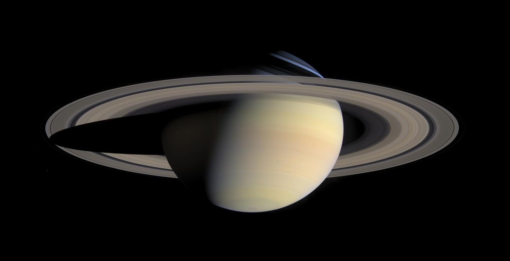
Ο πιο εντυπωσιακός πλανήτης του ηλιακού συστήματος — ένας κόσμος δακτυλίων, φεγγαριών και παγωμένων μυστηρίων.
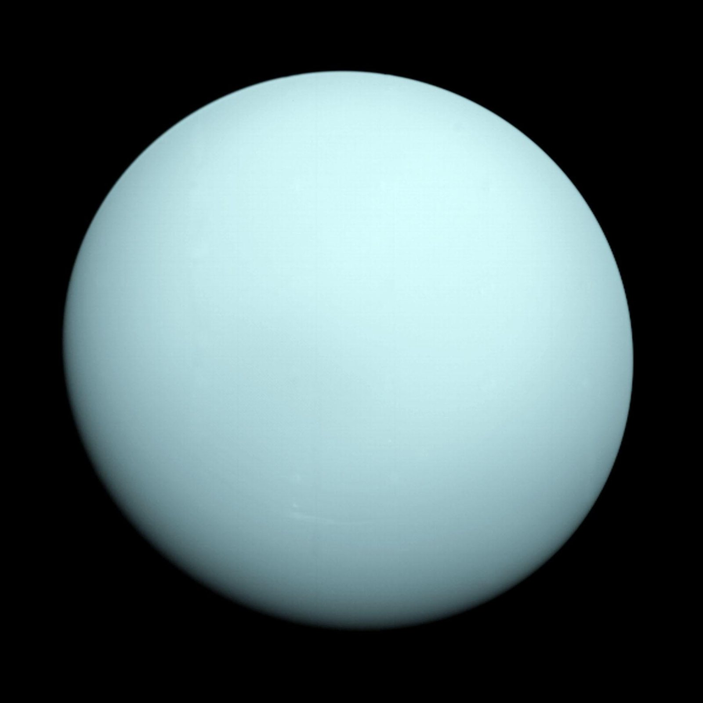
Ένας κόσμος γαλάζιου μεθανίου, που κυλάει στο πλάι γύρω από τον Ήλιο.
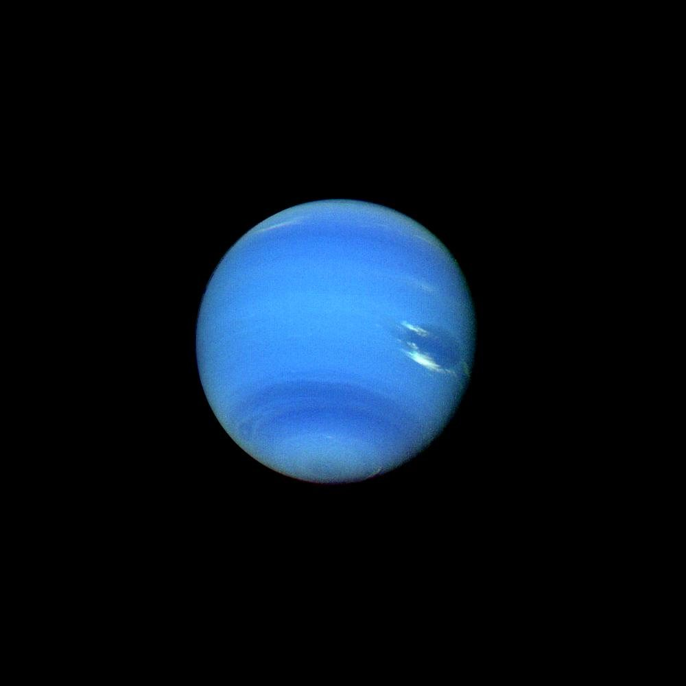
Ο πιο μακρινός πλανήτης, με τους ταχύτερους ανέμους και μια μαθηματική ανακάλυψη που συγκλόνισε την επιστήμη.
Σε αριθμούς
Η μέση απόσταση από τον Ήλιο υπολογίζεται από τον τρίτο νόμο του Kepler, με βάση την περίοδο περιφοράς.